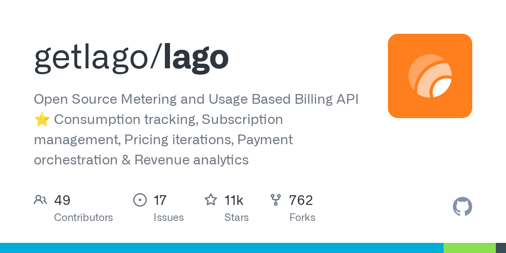

05 GitHub
getlago/lago
사용량 과금을 제품 바깥으로 분리한 오픈소스
★ 10,638이번 주 +41GoAGPL-3.0 법무 확인릴리스 v1.53.0 (09.08)최근 활동 09.29테스트 없음예제 있음AGENTS.md 없음

AI 서비스와 API 사업은 사용량에 맞춘 과금이 점점 복잡해진다. 토큰 수, API 호출 수, 좌석 수, 선불 크레딧, 최소 사용 약정이 한 시스템에 함께 들어가기 때문이다. Lago는 이 문제를 제품 코드 밖의 별도 과금 엔진으로 풀겠다는 접근을 취한다. 이번 저장소에는 로컬 데모와 운영 특성, 배포 방식이 비교적 자세히 적혀 있다.
무엇을 하는 물건인가
getlago/lago는 서비스 사용량을 받아 요금, 크레딧, 청구서, 결제로 연결하는 오픈소스 과금 시스템이다. 애플리케이션이 보낸 이벤트를 요금 지표로 바꾸고, 가격 규칙과 권한을 적용한 뒤 청구서와 결제까지 이어서 처리한다. 이 도구가 없으면 서비스 안에 사용량 집계와 요금 계산 규칙, 청구 로직을 직접 엮어 넣어야 한다. 전기와 수도 검침표를 따로 모아 요금 고지서로 바꾸는 뒷단을 제품 밖에 떼어 둔 셈이다.
스펙과 도입 조건
- 주 언어는 Go다.
- 소스 기반 로컬 배포와 Docker Compose 실행 방식을 안내한다.
- Helm 차트도 제공한다고 적혀 있다.
- 애플리케이션은 REST API나 SDK로 연결한다.
- 별도 플러그인은 필요 없다고 밝혔다.
- 결제 사업자는 Stripe, Adyen, GoCardless 등을 연결할 수 있다고 적혀 있다.
- 라이선스는 AGPL-3.0이다.
- 최신 릴리스는 v1.53.0이며 공개 시점은 2026년 9월 8일이다.
- 자체 호스팅 환경은 기본 분석 수집이 켜져 있으며 끌 수 있다고 밝혔다.
이럴 때 쓰면 좋다
- API 상품을 운영하는 팀이 호출 수나 토큰 수 기준으로 고객사별 과금을 붙여야 할 때 적합하다.
- 내부 AI 서비스의 사용량을 부서별 원가로 나눠 보고, 선불 크레딧이나 초과 사용 규칙까지 함께 관리할 때 쓸 수 있다.
- 새로운 요금제를 시험하는 사업 부서가 청구 로직을 제품 코드에서 분리해 가격 규칙만 바꾸고 검증하고 싶을 때 유용하다.
핵심 기능
- 토큰, 연산 자원, API 호출, 좌석 수 같은 사용량을 과금 지표로 집계한다.
- 가격 규칙, 크레딧, 허용량, 초과 사용 규칙을 적용한다.
- 청구서 발행, 결제 수금, 매출 분석까지 연결한다.
이번 릴리스에서 바뀐 점
이번 릴리스에서 무엇이 바뀌었는지는 제공된 설명에 없다. 릴리스 노트의 새 기능, 호환성 변경, 삭제 항목은 별도 확인이 필요하다.
대신 저장소 설명에는 로컬 데모가 자세히 적혀 있다. 예시 AI 요청 3건을 넣으면 입력 토큰 5,000개는 개당 0.000002달러로 0.01달러가 붙고, 출력 토큰 1,250개는 개당 0.000008달러로 0.01달러가 붙는다. 합계는 0.02달러다. 입력보다 출력 단가가 4배 높아, 같은 양이라면 출력 토큰이 더 비싸다.
이 데모는 로컬 조직을 만들고 현재 사용량을 다시 계산해 맞는지 검증한다. 같은 거래를 한 번 더 보내도 사용량이 늘지 않는지 확인하는 절차도 포함한다. 모든 실행은 사용자의 기기 안에서만 이뤄지며, Lago Cloud에는 접근하지 않는다고 밝혔다.
| 항목 | 사용량 | 단가 | 금액 |
|---|---|---|---|
| 입력 토큰 | 5,000 | 0.000002달러 | 0.01달러 |
| 출력 토큰 | 1,250 | 0.000008달러 | 0.01달러 |
| 합계 | — | — | 0.02달러 |
사내 도입 체크
- 외부 API 호출은 선택 사항이다. 로컬 데모는 Lago Cloud에 접근하지 않는다고 밝혔다.
- 데이터 반출 가능성은 배포 방식에 따라 달라진다. 자체 호스팅이 가능해 인프라와 데이터 통제를 직접 가져갈 수 있다.
- 유지보수 주체는 getlago 조직이다.
- 대체할 수 있는 상용 제품은 있다. 저장소 설명도 Stripe, Adyen, GoCardless 같은 결제 사업자와 분리해 쓰는 구조를 강조한다.
원문 정보
제목: getlago/lago
최근 활동: 2026.09.29
출처 URL: https://github.com/getlago/lago